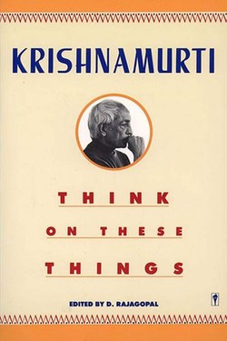

Library › Psychology & People
Think on These Things — Summary & Key Lessons

Krishnamurti's radical teaching: freedom is not found by following anyone — not even him.
📖 OPEN THE FULL INTERACTIVE BREAKDOWN →🌐 Read it in Hindi, Hinglish, Gujarati, Tamil & 22 more languages — free, with audio.
💡 The Big Idea
Krishnamurti dismantles the entire self-help project: he says no teacher, system, guru or technique can free you, because the act of following anyone is itself bondage. The mind is conditioned by memory, and memory always distorts perception. His invitation: observe your own thinking — without judgement, without wanting change — and in that passive attention, truth and freedom appear by themselves.
🧠 The 10 Key Lessons
Lesson 1: See Without the Filter
Lecture 1: Observation
Most of what we call seeing is labelling. Your mind has already classified the person, the event, the idea — so you are never in contact with reality, only with your labels. Krishnamurti's practice is audacious: observe without naming. Not 'he is annoying' — just look. What remains when the label goes is the truth.
📖 Example: The colleague you 'know' is lazy — watch one whole meeting without the label and you may see something new. Read the full example →
⚡ Do this: For one day, catch every judgement and restate it as pure observation (no adjectives of worth).
Lesson 2: Authority Is the Trap — Yours Most of All
Lecture 2: Freedom
Krishnamurti attacks not only external gurus but the inner authority — the 'me' that insists it knows. Following any system, even a good one, prevents living inquiry. Freedom cannot be given or taught; it is the absence of the follower. He is merciless about spiritual shopping: the seeker who collects techniques never begins.
📖 Example: The perpetual seeker moves from course to course, master to master — and never actually looks at his own mind. Read the full example →
⚡ Do this: For one week, follow no one's method — just observe your own mind and write what you actually see.
Lesson 3: Fear Is the Root of Almost Everything
Lecture 3: Fear
Fear, says Krishnamurti, is not created by the event but by thought about the event — yesterday's memory and tomorrow's imagining. Fear of failure is thinking about failure; the actual moment is rarely terrible. When you see fear as a thought rather than a fact, its power halves. Courage is not fearlessness; it is seeing.
📖 Example: The fear of public speaking is a loop of imagined futures; the first 30 seconds on stage are always milder than the rehearsal. Read the full example →
⚡ Do this: When fear arrives, ask: 'Is this the moment, or my thinking about the moment?'
Lesson 4: Attention Without Effort
Lecture 4: Awareness
The central technique (if it can be called one) is choiceless awareness: watching without choosing, without the urge to fix. Effort creates tension, tension creates conflict, conflict deepens the problem. When attention is passive and complete, problems dissolve not because they are solved, but because they are finally seen whole.
📖 Example: Falling asleep is effortless; so is understanding, when you stop forcing it — attention relaxes and a solution simply appears. Read the full example →
⚡ Do this: Daily: 5 minutes of silent watching — of breath, a candle, or your own thoughts — with no plan to change anything.
Lesson 5: Love Is Not a Technique
Lecture 5: Love
Krishnamurti's final theme: love cannot be cultivated. Techniques of love are the opposite of love — they are self-improvement projects. Love is what remains when the self — its images, demands and fears — is absent. That is why he says the man who is not afraid of being a fool is wise: the protective self is the obstacle to love.
📖 Example: A mother absorbed in her phone while 'spending time' with her child is present with the image of love, not love. Read the full example →
⚡ Do this: One hour today with full presence, no phone, no agenda — a small experiment in selfless attention.
Lesson 6: Order vs Freedom: The Real Conflict
Lecture: The Function of Education
Krishnamurti's political insight is subtle: freedom is not the absence of order but the absence of compulsion. A society that controls through reward and punishment keeps its chains even when the shelves are full — the employee who is 'free' to choose within a system that punishes dissent has exchanged iron chains for a longer leash. Real freedom begins when you stop being governed by the fear of loss.
📖 Example: The professional who believes she chooses her career but would not dare change it — the fear of losing status does the governing, not her. Read the full example →
⚡ Do this: Identify one place you feel trapped; name the compulsion (fear of losing X) — then take one small action on your own terms anyway.
Lesson 7: The Trap of the Interpreter
Part 1: The Search (Mind as Interpreter)
Krishnamurti's central diagnosis: you never meet reality directly — you meet your interpretation of it. The brain, conditioned by culture, memory and fear, translates every event into a story, and the story is what you react to. Freedom begins not with a better story but with the capacity to see the interpretation as interpretation, to look at the fact without the commentary.
📖 Example: A criticism becomes 'an attack' — but the words are just the words; the attack was added by the interpreter. Read the full example →
⚡ Do this: Today, catch three interpretations and note the bare fact under each. Fact: 'He said X.' Story: 'He disrespects me.' Watch the gap.
Lesson 8: Learning Is Not Accumulation
Part 1: The Search (Learning)
Krishnamurti's distinction is precise: knowledge is accumulation — useful for operating machines, deadly for understanding life. Learning, as he uses it, is the act of meeting each moment fresh, with the previous moment's conclusions held lightly. The mind that believes it already knows has stopped learning; the mind that meets every situation as if new is eternally a student.
📖 Example: The expert who knows the answer never hears the question; the beginner who asks it finds the thing the expert walked past. Read the full example →
⚡ Do this: Enter your next conversation as if you know nothing. Ask one more question than you normally would. Let the answers surprise you.
Lesson 9: Relationship Is a Mirror You Cannot Escape
Part 2: The Conflict (Relationship)
Krishnamurti calls relationships the mirror in which you see yourself as you are — not as you pretend. Every relationship is a mirror; the irritation you feel is your own shape reflected and you cannot polish the mirror to fix the image. This turns marriage, friendship and office conflicts into the most direct spiritual practice available: no escape, constant feedback, immediate results.
📖 Example: The partner who 'annoys you daily' is showing you the same pattern daily — the annoyance will not vanish until the pattern inside changes. Read the full example →
⚡ Do this: Pick your most irritating relationship and list three things it keeps showing you about yourself. No fixing the other person; only reading the mirror.
Lesson 10: The Ending of Time: How Change Actually Happens
Part 4: The Ending (Transformation)
Krishnamurti's toughest teaching: real change is not gradual improvement — the old pattern continues in another costume — it is 'the ending of the old' right now. Insight is of the nature of a flash: it does not build up like a habit, it comes whole and breaks the pattern. This is why he distrusted 'practice' and 'discipline' as spiritual progress, because the reformed ego is still the ego.
📖 Example: The smoker who 'gradually reduces' is still a smoker managing; the smoker who sees through the craving entirely — in a single instant — is free of it. Read the full example →
⚡ Do this: Take one pattern you have been 'improving'. Ask the radical question: can it end, not be managed? Look at it completely, without the escape of better management.
✅ 5-Step Action Plan
- Log one day of judgement-free observations.
- Spend one week following no external method — observe only.
- Audit each fear: the moment, or your thinking about it?
- Practise 5 minutes of choiceless awareness daily.
- Give one hour of total presence — no agenda, no device.
⚠️ When This Doesn't Work
Krishnamurti's antimethod is rigorous but easy to misunderstand as anti-effort; some readers use it as an excuse to avoid all discipline. The teaching demands extremely high attention, and its philosophy of the self is debatable.
💀 The Graveyard Proves It
🏝️ Billy McFarland — Fyre: Luxury Festival, FEMA Tents. Burn: $26M investor money, 6 years prison Read the full case study →
💬 Best Quotes from Think on These Things
- “The ability to observe without evaluating is the highest form of intelligence.”
- “You are the world — the world is not different from you.”
- “A man who is not afraid of being a fool is the wisest man.”
Interactive version: mark lessons as read, listen in your language, share quote cards.